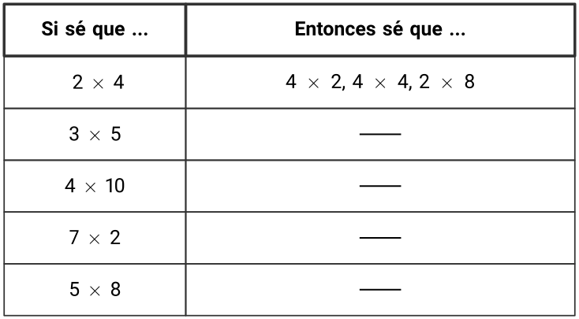

Los estudiantes pueden haber trabajado con la tabla de multiplicar en una lección anterior. En esta lección, observan patrones y estructuras en la tabla que resaltan propiedades útiles para multiplicar números. El enfoque principal es la propiedad conmutativa, donde multiplicar dos números en cualquier orden da el mismo resultado. Los estudiantes utilizan esta observación para encontrar productos desconocidos.
Preguntas de reflexión.
¿Qué le sorprendió sobre cómo pensaron los estudiantes en la primera actividad?
SubsubsecciónCalentamiento (10 mins)
Tiempo recomendado.
10 minutos
Narrativa.
El propósito de esta actividad es generar la idea de que el producto de dos factores en la tabla de multiplicar se encuentra donde se cruzan la fila y la columna de cada factor. Aunque los estudiantes pueden observar y preguntarse muchas cosas sobre estos productos, se debe enfatizar los patrones en la tabla de multiplicar y cómo está estructurada.
Lanzamiento.
Grupos de 2
Mostrar la imagen.
“¿Qué observan? ¿Qué se preguntan?”
1 minuto: tiempo para pensar en silencio
Desarrollo de la actividad.
“Discutan con su compañero lo que pensaron”
1 minuto: discusión en pareja
Compartan y registren las respuestas.
Calentamiento36.Observa y pregúntate: Tabla de multiplicar.
¿Qué observas? ¿Qué te preguntas?
Solución.
Los estudiantes pueden observar:
Los números en la fila superior y en la columna más a la izquierda son factores.
El producto se alinea con un factor en la parte superior y un factor a la izquierda.
La fila que comienza con 5 cuenta de 5 en 5 a medida que uno se mueve hacia la derecha: 5, 10, 15, etc.
La columna que comienza con 3 cuenta de 3 en 3 a medida que uno se mueve hacia abajo: 3, 6, 9, etc.
Hay muchos patrones en la tabla.
La tabla es similar a algunas tablas que vimos antes, pero esas tablas tenían que ver con la suma.
Los estudiantes se pueden preguntar:
¿Qué significan los números en la tabla?
¿Cómo funciona la tabla?
¿Por qué los números son más pequeños en la parte superior izquierda de la tabla y luego más grandes en la parte inferior derecha de la tabla?
Síntesis de la actividad.
Si los estudiantes no lo mencionan, explique: “En una tabla de multiplicar se usan filas y columnas para mostrar productos de dos números. Los números que están en la columna de más a la izquierda y en la fila de más arriba son los factores”
“Cada número de la tabla (de la parte que no está sombreada) es el resultado de multiplicar los dos factores que están en la misma fila y columna que ese número”
“¿Qué patrones ven en la tabla de multiplicar y por qué funcionan?” (Al movernos hacia la derecha en la fila de los 3 o hacia abajo en la columna de los 3, los productos aumentan en 3, porque estamos sumando grupos de 3. El número 15 aparece en dos lugares porque podemos encontrar \(3 \times 5\) o \(5 \times 3\) para obtener 15. Vemos el 12 en dos lugares en la tabla porque podemos obtener 12 contando de 3 en 3 como 3, 6, 9, 12 o contando de 4 en 4 como 4, 8, 12.)
“Encuentren todas las posiciones en las que aparece 20. ¿Cuáles parejas de factores al ser multiplicadas dan 20?” (4 y 5)
SubsubsecciónActividad 1 (20 mins)
Tiempo recomendado.
20 minutos
Narrativa.
El propósito de esta actividad es que los estudiantes apliquen estrategias de multiplicación basadas en las propiedades de las operaciones para encontrar productos en una tabla de multiplicar. Aunque los estudiantes pueden usar diversas estrategias basadas en las propiedades de las operaciones, intente resaltar estrategias basadas en la propiedad conmutativa. Los estudiantes consideran cómo los productos conocidos que ya están en la tabla pueden ayudar a encontrar un producto desconocido en la tabla de multiplicar.
Cuando los estudiantes utilizan un hecho de multiplicación que conocen para determinar un hecho de multiplicación que no conocen, buscan y hacen uso de la estructura (MP7).
Lanzamiento.
Grupos de 2
“En esta actividad vamos a trabajar con otra tabla de multiplicar. ¿Qué diferencias hay entre esta tabla y la primera tabla que vimos?”
“Trabajaremos con otra tabla de multiplicar en esta actividad. ¿Cómo es diferente esta tabla de la primera tabla que vimos?” (Tiene más productos que la primera tabla. No muestra todos los productos. Algunas de las casillas tienen letras.)
1 minuto: tiempo para pensar en silencio
Compartir respuestas.
Desarrollo de la actividad.
“Usen los números de la tabla como ayuda para encontrar los números que deberían ir en lugar de las letras de la A a la G. Piensen en cómo podrían ayudarles los números que ya están en la tabla”
“Después, encuentren los números que deberían ir en otras tres casillas vacías de la tabla. Prepárense para explicar su razonamiento”
5–7 minutos: tiempo de trabajo independiente
“Compartan con su compañero cómo encontraron los números que faltan en la tabla”
3–5 minutos: discusión en pareja
Identifique a los estudiantes que:
usan \(7\times 2\text{,}\) que está en la tabla, para encontrar \(2\times 7\) o A
suman un grupo más de 4 a 20 para encontrar C
usan un producto de la fila de los 9 para encontrar un producto en la columna de los 9
Actividad37.Productos en la tabla.
Esta es una tabla de multiplicar que no se ha completado totalmente.
Usa los productos de la tabla para ayudarte a encontrar los números que deberían ir en lugar de las letras de la A a la G. Prepárate para explicar tu razonamiento.
Encuentra los números que deberían ir en otras tres casillas vacías de la tabla. Usa:
7 como un factor
9 como un factor
10 como un factor
Prepárate para explicar tu razonamiento.
Solución.
Respuestas:
14
27
24
40
60
60
49
72
Ejemplos de respuestas:
\(\displaystyle 7 \times 4 = 28\)
\(\displaystyle 9 \times 4 = 36\)
\(\displaystyle 10 \times 10 = 100\)
Síntesis de la actividad.
Seleccione a los estudiantes previamente identificados para compartir cómo utilizaron los números que estaban en la tabla para encontrar productos desconocidos. De ser posible, muestre una copia grande de la tabla e ilustre el razonamiento de los estudiantes.
Desarrollo de lenguaje matemático.
MLR2 Recopilar y Mostrar. Circule, escuche y recopile el lenguaje que los estudiantes utilizan al encontrar los productos desconocidos en la tabla y al describir las estrategias que utilizaron. En una presentación visual, registre palabras y frases como: "agregar un grupo más", "los mismos factores", "cambiar el orden", "quitar un grupo", "duplicar". Invite a los estudiantes a tomar prestado el lenguaje de la presentación según sea necesario, y actualícelo a lo largo de la lección.
Avances: Conversacion, Lectura
SubsubsecciónActividad 2 (15 mins)
Tiempo recomendado.
15 minutos
Narrativa.
El propósito de esta actividad es que los estudiantes articulen cómo utilizan productos conocidos para encontrar productos desconocidos, utilizando una estructura similar a la utilizada en una lección anterior. Los estudiantes pueden describir estrategias basadas en cualquier propiedad de las operaciones. El enfoque debe estar en la descripción de la estrategia (como "multiplicar dos números en cualquier orden da el mismo producto") en lugar de recordar la propiedad en la que se basa la estrategia (como "propiedad conmutativa").
“Trabajen individualmente. En la columna de la derecha, escriban al menos dos hechos de multiplicación que pueden descifrar porque conocen el hecho de multiplicación dado en la columna de la izquierda”
3–5 minutos: tiempo de trabajo individual
“Ahora, compartan con su compañero los hechos que encontraron. Anoten todos los hechos que encontró su compañero y que ustedes no encontraron. Asegúrense de explicar su razonamiento”
3–5 minutos: tiempo de trabajo en pareja
Actividad38.Si sé que …, entonces sé que …: Multiplicación.
En cada fila, escribe al menos dos hechos de multiplicación que puedes descifrar porque conoces el hecho de multiplicación dado en la columna de la izquierda. Prepárate para compartir tu razonamiento.

Si te queda tiempo, completa el resto de la tabla de multiplicar. Usa los hechos de multiplicación que conoces para encontrar aquellos que no conoces.
Solución.
Ejemplos de respuestas:
Los estudiantes completan la tabla de la actividad anterior.
Síntesis de la actividad.
Para cada producto dado, invite a 1 o 2 estudiantes a compartir los productos que encontraron y a explicar cómo estaban relacionados con el producto dado.
Acceso a estudiantes con discapacidades.
Acción y Expresión: Desarrollar la Expresión y la Comunicación. Síntesis: Identificar conexiones entre estrategias que resultan en los mismos resultados pero utilizan enfoques diferentes.
Apoya la accesibilidad para: Memoria, Procesamiento Conceptual
SubsubsecciónSíntesis de la lección (10 mins)
“Hoy usamos productos que nos sabíamos para encontrar productos que no nos sabíamos”
“¿Qué patrones les parecieron útiles?” (Podemos escribir los factores en cualquier orden, el resultado sigue siendo el mismo. Por ejemplo \(3 \times 6\) tiene el mismo valor que \(6 \times 3\text{.}\) Si sabemos que \(3 \times 5\) es 15 y 6 es \(2 \times 3\text{,}\) entonces \(6 \times 5\) es el doble de \(3 \times 5\) o \(2 \times (3 \times 5)\text{,}\) o dos veces 15, que es 30. Podemos encontrar el valor de \(8 \times 2\) pensando en 8 como \(3 + 5\) y luego encontrando \(3 \times 2\) y \(5 \times 2\text{.}\) Cuando 2, 4, 6, 8 y 10 es uno de los factores, el producto es par. Cuando 5 es un factor, el producto alterna entre 5 y 10. Cuando 10 es un factor, el producto termina en 0.)
Registre los patrones que los estudiantes mencionaron.
Actividad de cierre39.Encuentra el producto desconocido.
¿Qué número debería ir en lugar del signo de interrogación? Explica o muestra tu razonamiento.
Solución.
32. Ejemplo de respuestas: La tabla muestra que \(4 \times 8\) es 32, y sé que \(8 \times 4\) tiene el mismo valor que \(4 \times 8\text{,}\) por lo que también es 32. Sé que \(4 \times 4\) o 4 grupos de 4 es 16. Sumé otro 16 para obtener \(8 \times 4\text{,}\) y \(16 + 16 = 32\text{.}\)
Posibles errores.
Los estudiantes encuentran el producto de 4 y 8 dibujando un diagrama discreto o contando uno por uno.
Acciones para apoyar el aprendizaje.
Antes de la actividad de calentamiento del día siguiente, haga que los estudiantes discutan qué hechos de multiplicación en la tabla se pueden usar para encontrar \(4\times 8\text{.}\)